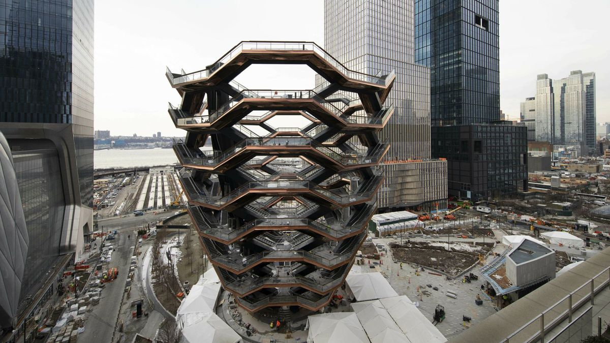
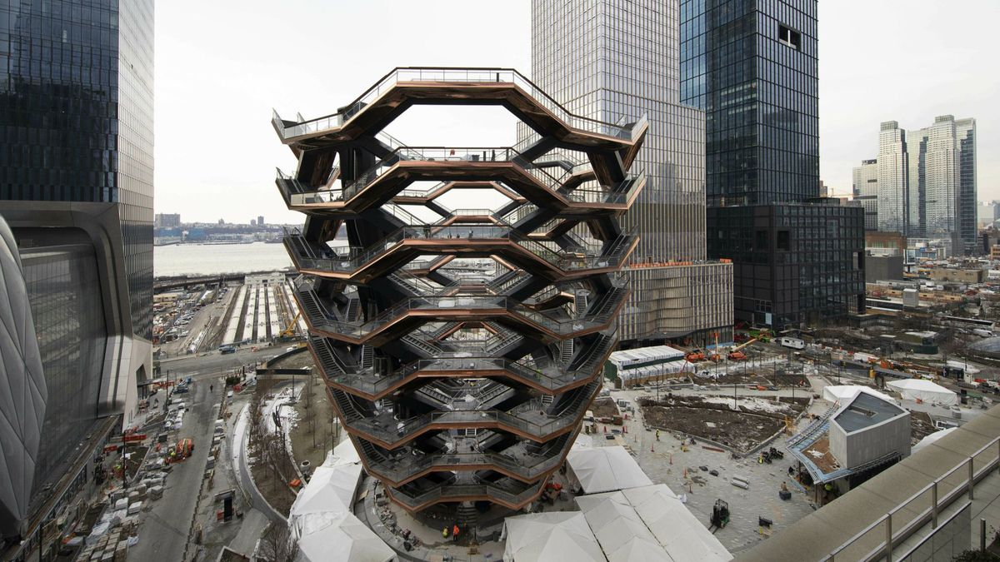

The City of New York, usually referred to as either New York City (NYC) or simply New York (NY), is the most populous city in the United States. With an estimated 2018 population of 8,398,748 distributed over a land area of about 302.6 square miles (784 km2), New York is also the most densely populated major city in the United States.[10] Located at the southern tip of the state of New York, the city is the center of the New York metropolitan area, the largest metropolitan area in the world by urban landmass[11] and one of the world's most populous megacities,[12][13] with an estimated 19,979,477 people in its 2018 Metropolitan Statistical Area and 22,679,948 residents in its Combined Statistical Area.[3][4] A global power city,[14] New York City has been described as the cultural,[15][16][17][18][19] financial,[20][21] and media capital of the world,[22][23] and exerts a significant impact upon commerce,[21] entertainment, research, technology, education, politics, tourism, art, fashion, and sports. The city's fast pace[24][25][26] has inspired the term New York minute.[27] Home to the headquarters of the United Nations,[28] New York is an important center for international diplomacy.


 
